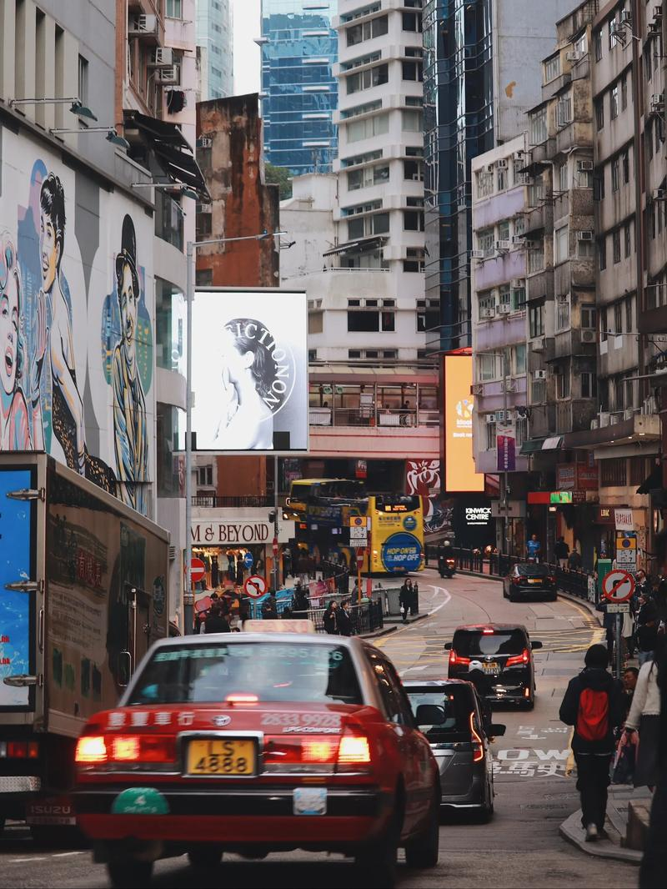

自我介绍
关于我， 我是一个在不同文化背景下成长的人。虽然出生在繁华的香港，但我的根在福建——那里有我祖辈的故事和家乡的味道。这些年来，我主要在广东生活，这片充满活力的土地见证了我的成长。 这种跨地域的经历让我对不同的文化都有独特的理解和感受。从香港的国际化氛围，到福建的传统文化底蕴，再到广东的务实创新精神，每一个地方都在我身上留下了印记。 兴趣与生活 足球是我生活中不可或缺的一部分。无论是周末约上朋友在球场上挥洒汗水，还是熬夜看世界杯的精彩对决，足球总能让我充满激情。我最喜欢的球队是...（可以填你支持的球队），每一场比赛都是一次心跳的体验。 除了踢球，我也喜欢通过足球认识新朋友。在球场上，语言不是障碍，共同的热爱让我们成为队友。这种团队精神和拼搏态度也影响着我生活的方方面面。 期待与你交流 如果你也对足球感兴趣，或者想聊聊香港、福建、广东这三个地方的故事，欢迎随时找我交流。我相信，每一次对话都可能带来新的启发和友谊。
